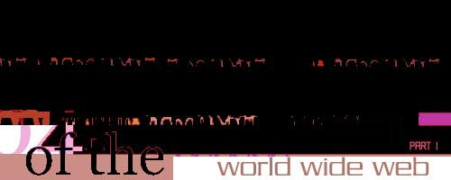
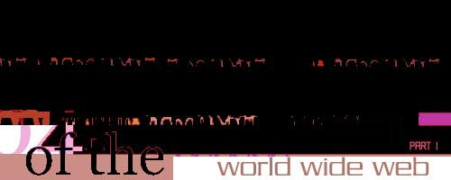

Answers?
|
|
Switch Staffs on
Mar 15 1997 |
issue 06 |
Pressing answers.
|
|
|
|
1. Web-specific art materializes as a viewer locates and then interacts with it.
Does the viewer become partnered with the artist in the creation of the artwork?
How does this affect our cultural perceptions of authorship and originality, i.e.,
who is the "artist"? Is the "art" the the venue or system which the artist creates,
or is it the partnered outcome of viewer/participant and artist/creator?
2. Web artists anticipate the possible ways in which a viewer will perceive and interact with the work. Does this artistic experience differ with the creative endeavors of the more traditional artistic expressions of painting, photography, sculpture, etc.?
3. Text seems to be an integral part of much web-specific art.
What part does it play? How does text stand alone as art, i.e., a hypertext document?
Do web artists tend to overuse text as a means to create a sense of intimacy/communication/dialogue with the viewer? Is it necessary
to keep a "reasonable" balance between text and images?
4. What is the future of web art? Will the web become a medium of choice for
more artists in the future? Or, is it temporarily a "new medium" that attracts artistic experimentation and one which will eventually become uninteresting to artists once
it becomes familiar territory? How will web art expression evolve as the Internet
takes new forms?
5. How does the Internet change the way art is experienced by the viewer?
6. What motivates artists to create art specifically for the Internet?
7. Web artists have the potential to engage an audience that might not enjoy
the experience of art in the traditional gallery setting. Does the more personal one-on-one aspect of web-specific art allow artists to communicate more
adequately to their audience than the formality of the gallery?
8. As web use becomes more widespread, could it eventually replace the elitist pretensions of the art gallery?
9. Does web-specific art speak to the culture at large more than art in the gallery?
10. Is it possible for artists who have been traditionally trained to engage the Web as an artistic medium? If so, what happens to their "commodity" the product of their creative expression? Is web art a commodity that can be sold? Can artists come to grips with the dematerialization of the "art object" and opt for the transitory nature
of web art? Do web artists make art for art's sake?
11. The utopian, futuristic buzzwords and discourse of the web articulate and propagate particular ideologies, influencing a users expectations of artwork on
the web. Should web-specific art be aware of its hyperactive climate and perhaps subvert, disappoint or expose a users expectations of webart?
12. How can web-specific art manipulate a users expectations of navigation, control and location in the users exploration of a webartsite? How does web art differ from artwork in other mediums regarding navigation, control and address?
13. Can machines make art?
|
| |
|
 |
|
 |
|

|
::CrossReference last 5 articles posted by Staffs :: Curator's Statement - Mar 27 2003 :: Douglas Engelbart Transcript - Mar 25 2003 :: Marisa Olson Transcript - Mar 25 2003 :: Peter Lunenfeld Transcript - Mar 25 2003 :: CADRE Invitational 2002-2003 - Mar 25 2003 :: Jan Hauser Transcript - Mar 25 2003 :: Margaret Morse Transcript - Mar 25 2003 :: Oliver Grau Interview - Mar 10 2003 :: Interview with Tim O'Reilly - Mar 10 2003 :: issue 16 :: social network part II - Feb 25 2002
view all posts made by Staffs
|

 
